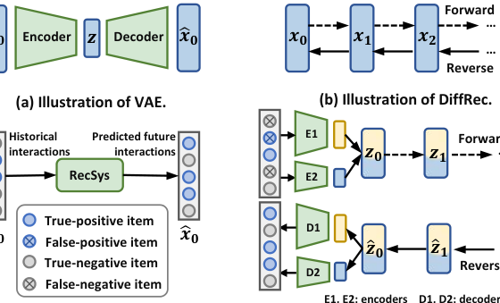
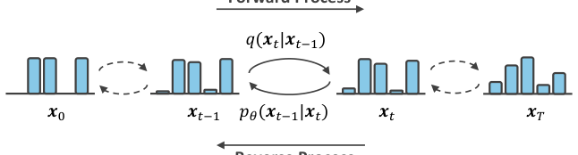

Diffusion Recommender Model (扩散推荐模型)
- 会议/期刊: SIGIR 2023
- 作者与机构: Wenjie Wang, Yiyan Xu, Fuli Feng, Xinyu Lin, Xiangnan He, Tat-Seng Chua（新加坡国立大学 / 中国科学技术大学）
- 推荐链路定位: 端到端生成式（对全物品交互向量一次性生成概率并排序）
- 研究方向: 生成式推荐与离散语义 ID / 协同过滤
- 论文原文: https://arxiv.org/abs/2304.04971v3
- 开源代码: https://github.com/YiyanXu/DiffRec
TL;DR (1分钟核心速览)
本文针对 GAN 训练不稳定、VAE 在「后验可解性 vs. 表征能力」间被迫折衷（导致含假阳性噪声的隐式反馈建模不准）的痛点，提出 DiffRec：把用户的全物品交互向量当作图像去噪，用多步高斯前向加噪 + 迭代反向重建预测 \(\hat{\boldsymbol{x}}_0\)。为避免破坏个性化，噪声尺度\(s\)被压到\(10^{-4}\)级且推理只用\(T' \le T/4\)（甚至\(T'=0\)）步。在 Amazon-book/Yelp/ML-1M 三数据集、7:2:1 时间切分 + Full-Ranking 协议下，Clean 训练 R@10 相对最优基线提升 10.67%/2.47%/4.86%，且 L-DiffRec 省 56% 参数、25% 显存。
Background & Motivation (背景与核心矛盾)
- 主流范式: 生成式推荐分为 GAN 系（对抗训练估计交互概率）与 VAE 系（MultiVAE/MultiDAE 用编码器逼近隐变量后验、解码全物品多分类似然）。
- 前人局限: ① GAN 对抗训练不稳定，推荐精度常不如下述 AE 系；② VAE 受「可解性与表征力折衷」限制——简单编码器抓不住异构偏好，复杂编码器后验不可解；③ 现有扩散推荐 CODIGEM 用多套 AE 逐步加噪，推理却只用第一个 AE，等价于一个小噪声尺度的 MultiDAE，性能反而更差。
- 核心洞察 (Key Insight): 推荐任务本身与扩散模型目标天然同构——推荐正是"从被污染的历史交互（假阳性/假阴性）推断未来交互"。因此无需像图像合成那样扩散至纯高斯噪声，保留部分个性化信号即可，且应直接预测 \(\boldsymbol{x}_0\)而非噪声\(\boldsymbol{\epsilon}\)。
- 本文切入点: 用小尺度噪声调度 + 少步推理把 DM 改造成推荐器，并对大规模物品预测、偏好时序漂移两个工程痛点各给一个扩展。

Method (核心方法设计)
1. 整体框架 (Overall Architecture)
输入用户 \(u\)的二元交互向量\(\boldsymbol{x}_0=\boldsymbol{x}_u \in \{0,1\}^{|\mathcal{I}|}\)。训练时随机采样步\(t\)，按闭式重参数化\(\boldsymbol{x}_t=\sqrt{\bar{\alpha}_t}\boldsymbol{x}_0+\sqrt{1-\bar{\alpha}_t}\boldsymbol{\epsilon}\)一次性得到损坏交互，送入共享 MLP（拼接步嵌入）预测\(\hat{\boldsymbol{x}}_0\)，最小化各步去噪匹配损失。推理时先对\(\boldsymbol{x}_0\)前向加噪\(T'\)步得\(\hat{\boldsymbol{x}}_T\)，再沿\(t=T\to1\)迭代确定性去噪（取\(\boldsymbol{\mu}_\theta\)、忽略方差，仿 MultiVAE），最终以\(\hat{\boldsymbol{x}}_0\) 对未交互物品排序出 Top-K。L-DiffRec 把扩散搬到聚类隐空间，T-DiffRec 则在输入处施加时间权重。
flowchart TD
A["用户交互向量 x0 (全物品 0/1)"] --> B["T-DiffRec: 时间线性重加权"]
B --> C["前向加噪 q(xt|x0) 小尺度调度 s"]
C --> D["去噪 MLP 预测 x0 (x0-ELBO, 重要性采样)"]
D --> E["L-DiffRec: 物品聚类 + 分组 VAE 隐空间 z0"]
E --> F["迭代反向去噪 (T' 步前向 + T 步反向)"]
F --> G["x̂0 全库排序 Top-K"]
2. 关键设计拆解 (Key Designs)
- 小噪声调度 + \(\boldsymbol{x}_0\)-ELBO（保留个性化的核心）：图像扩散把\(\boldsymbol{x}_T\)推向标准高斯，会抹掉用户偏好。本文把线性调度写为\(1-\bar{\alpha}_t=s\cdot[\alpha_{\min}+\frac{t-1}{T-1}(\alpha_{\max}-\alpha_{\min})]\)并取极小\(s\)（如\(10^{-4}\)），使\(\boldsymbol{x}_T\)仍含个性化信息；同时用贝叶斯展开后的\(\boldsymbol{x}_0\) 预测损失 \(\mathcal{L}_t=\mathbb{E}_{q(\boldsymbol{x}_t|\boldsymbol{x}_0)}\big[\tfrac{1}{2}\big(\tfrac{\bar{\alpha}_{t-1}}{1-\bar{\alpha}_{t-1}}-\tfrac{\bar{\alpha}_t}{1-\bar{\alpha}_t}\big)\|\hat{\boldsymbol{x}}_\theta(\boldsymbol{x}_t,t)-\boldsymbol{x}_0\|_2^2\big]\)替代\(\boldsymbol{\epsilon}\)-ELBO。直觉：推荐的目标本就是输出\(\hat{\boldsymbol{x}}_0\)排序，而随机噪声\(\boldsymbol{\epsilon}\)对稀疏交互下的 MLP 近乎不可学（表 5 显示\(\boldsymbol{\epsilon}\)-ELBO 直接崩到 0.0157）。
- L-DiffRec 隐空间扩散（降本）：全物品维度扩散参数随 \(|\mathcal{I}|\)爆炸。先用 LightGCN 物品表征做 k-means 聚\(C\)类，把\(\boldsymbol{x}_0\)切成\(\{\boldsymbol{x}_0^c\}_{c=1}^C\)，每组一个独立 VAE 压成低维\(\boldsymbol{z}_0^c\)（均值方差\(\boldsymbol{\mu}_{\phi_c},\boldsymbol{\sigma}^2_{\phi_c}\boldsymbol{I}\)），拼接后在\(\boldsymbol{z}_0\)上做扩散，再由分组解码器还原\(\hat{\boldsymbol{x}}_0\)。分组打断全连接既省参数又支持并行；总损失为 VAE 项与扩散项加权\(\mathcal{L}_v+\lambda\mathcal{L}(\boldsymbol{z}_0,\theta)\)。
- T-DiffRec 时间重加权 + 训练/推理效率：对长 \(M\)的交互序列按时间线性赋权\(w_m=w_{\min}+\frac{m-1}{M-1}(w_{\max}-w_{\min})\)（\(w_{\max}=1\)），构造\(\bar{\boldsymbol{x}}_0=\boldsymbol{x}_0\odot\bar{\boldsymbol{w}}\)后直接喂回 DiffRec，无需引入 RNN/Transformer。总目标为\(\sum_{t=1}^{T}\mathcal{L}_t\)的期望，无负采样（全物品多分类似然）；步采样默认\(t\sim\mathcal{U}(1,T)\)，可换成重要性采样\(\mathcal{L}_\triangle=\mathbb{E}_{t\sim p_t}[\mathcal{L}_t/p_t]\)，\(p_t\propto\sqrt{\mathbb{E}[\mathcal{L}_t^2]}\)，把优化重心压到高损失的"难步"。推理开销为\(T\)次 MLP 前传（默认\(T=5\)），远低于逐物品打分的检索范式。
Experimental Setup & Evaluation Protocol (实验设置与评估协议)
- 数据集与预处理（Clean 设置下丢弃 rating \(<4\)，噪声设置则把\(<4\) 的交互作为自然假阳性加回，物品集随之扩张）：
| 数据集 | #Users | #Items (Clean/Noisy) | #Interactions (Clean/Noisy) | 密度 | 特征/场景说明 |
|---|---|---|---|---|---|
| Amazon-book | 108,822 | 94,949 / 178,181 | 3,146,256 / 3,145,223 | 0.032% | 图书评论，极稀疏长尾 |
| Yelp | 54,574 | 34,395 / 77,405 | 1,402,736 / 1,471,675 | 0.075% | 本地商户评论 |
| ML-1M | 5,949 | 2,810 / 3,494 | 571,531 / 618,297 | 3.42% | 电影评分，稠密 |
- 数据划分与防穿越 (Splitting Strategy): 先按时间戳全局排序，再
7:2:1比例切分为 train/valid/test（时间序切分，杜绝未来交互泄漏）；噪声设置保持 test 不变、仅污染 train/valid；时序设置额外使用时间戳。 - 排名评测协议 (Ranking Protocol): 无偏
Full-Ranking——对每个用户在所有未交互物品上排序，报告 Recall@{10,20} 与 NDCG@{10,20}，不使用采样负例。 - 对比基线与超参设置: 对比 MF、LightGCN、CDAE、MultiDAE、自建 MultiDAE++（与 DiffRec 同噪声但单步解码）、MultiVAE、CODIGEM、ACVAE（时序）。步嵌入 10 维，MLP 隐层搜 {[300],[200,600],[1000]}，\(T\in\{2,5,10,40,50,100\}\)，\(T'\in\{0,T/4,T/2\}\)，\(s\in[10^{-5},0.5]\)，\(\alpha_{\max}\in\{5e{-3},1e{-2},2e{-2}\}\)；以 valid R@20 选参，单样本 t 检验\(p<0.05\) 标
*。
Key Experimental Results (实验关键数据)
1. 主实验对比 (Main Results)
Clean 训练（Amazon-book / Yelp / ML-1M）：
| 方法 | A-book R@10 | A-book R@20 | A-book N@20 | Yelp R@10 | Yelp N@20 | ML-1M R@10 | ML-1M N@20 |
|---|---|---|---|---|---|---|---|
| MF | 0.0437 | 0.0689 | 0.0339 | 0.0341 | 0.0276 | 0.0876 | 0.0966 |
| LightGCN | 0.0534 | 0.0822 | 0.0411 | 0.0540 | 0.0436 | 0.0987 | 0.1083 |
| MultiDAE | 0.0571 | 0.0855 | 0.0442 | 0.0522 | 0.0419 | 0.0995 | 0.1067 |
| MultiDAE++ | 0.0580 | 0.0864 | 0.0448 | 0.0544 | 0.0438 | 0.1009 | 0.1079 |
| MultiVAE | 0.0628 | 0.0935 | 0.0485 | 0.0567 | 0.0458 | 0.1007 | 0.1076 |
| CODIGEM | 0.0300 | 0.0478 | 0.0245 | 0.0470 | 0.0385 | 0.0972 | 0.1087 |
| DiffRec | 0.0695* | 0.1010* | 0.0547* | 0.0581* | 0.0478* | 0.1058* | 0.1148* |
| Improv.% | +10.67% | +8.02% | +12.78% | +2.47% | +4.37% | +4.86% | +6.69% |
2. 消融实验 (Ablation Study)
| 变体 | 关键改动 | R@10 | R@20 | N@20 | 资源 |
|---|---|---|---|---|---|
| DiffRec (ML-1M) | \(\boldsymbol{x}_0\)-ELBO 全量 | 0.1058 | 0.1787 | 0.1148 | 4M / 495MB |
| 替换 \(\boldsymbol{\epsilon}\)-ELBO | 改为预测噪声 | 0.0157 | 0.0266 | 0.0204 | — |
| L-DiffRec (C=2, A-book) | 隐空间扩散 | 0.0694 | 0.1028 | 0.0540 | 75M / 3077MB |
| DiffRec (A-book) | 原始空间 | 0.0695 | 0.1010 | 0.0547 | 190M / 5049MB |
| MultiVAE (A-book) | VAE 基线 | 0.0628 | 0.0935 | 0.0485 | 114M / 3711MB |
| T-DiffRec (A-book) | 时间重加权 | 0.0819 | 0.1139 | 0.0661 | 190M |
| LT-DiffRec (A-book) | 时间+隐空间 | 0.0838 | 0.1188 | 0.0665 | 75M / 3077MB |
| ACVAE (A-book) | 时序 SOTA 基线 | 0.0770 | 0.1107 | 0.0647 | 13M / 37,711MB |
3. 关键实验发现 (Key Findings)
- 去噪训练 = 隐式鲁棒性：自然噪声设置下 DiffRec（A-book R@10 0.0546、N@10 0.0335）同时超过 MultiVAE（0.0536/0.0316）与 LightGCN（0.0400/0.0231）；LightGCN 的 R@20 从 Clean 的 0.0822 崩到 0.0659（−20%），说明高阶图传播会放大假阳性噪声，而逐步去噪相当于对噪声做多尺度平滑。
- 噪声尺度是双刃剑：\(s=0\)（退化为普通 AE）性能劣于小幅加噪，但\(s\)增大到\(10^{-1}\)级则明显掉点（图 6）；\(T'>0\)反而更差，最优为\(T'=0\)——因为真实交互本身已含噪，推理再破坏一次会伤个性化，这与图像扩散"必须从纯噪声起步"的常识相反。
- 隐空间压缩近乎无损且更抗噪：L-DiffRec 仅用 DiffRec 37.6% 参数与 75.4% 显存即取得相当甚至更优精度；在噪声训练下反而全面超越 DiffRec（A-book R@10 0.0586 vs 0.0546，+7.3%），原因是被聚到小类中的稀疏高频假阳性在表征压缩时被削弱。时间维度上，LT-DiffRec 以 ACVAE 1/12 的显存取得 A-book R@20 0.1188 vs 0.1107 的优势。
Highlights & Limitations (亮点、对比与审稿批判)
- 与代表作对比 (vs. Prior Work): 相较 MultiVAE 的单步变分解码，DiffRec 用共享 MLP 做多步去噪、以更简单的可解前向换取更强表征力；相较 CODIGEM 的多套 AE + 仅用首个 AE 推理，本文共享网络且推理全程迭代；相较 T-DiffRec 对标 ACVAE 的对比学习+对抗训练，本文只用线性重加权即超越，且显存低一个量级。
- 可迁移亮点: ① "小噪声 + \(T'=0\) 起步"的调度技巧可迁到任何非图像域（交互/序列/图结构）扩散；② 用 k-means + 分组 VAE 把高维 one-hot 扩散压到 300 维隐空间，是把生成式推荐推向工业规模的通用降本套路。
- 审稿级局限批判: ① 推理需 \(T\)次全连接前传（默认 5），全库打分下延迟仍高于 LightGCN 的单次内积，论文未报时延/吞吐；② 噪声尺度\(s\)、\(\alpha_{\max}\)、\(T'\)三者强耦合且需细网格搜索，超参敏感度高，论文对\(\boldsymbol{\epsilon}\)-ELBO 失效仅给"MLP 难学随机噪声"的经验解释，缺乏理论刻画；③ 只在 3 个中小规模数据集验证，未与 SASRec/扩散语义 ID 类生成式检索做端到端对比。
Rating (四维评分)
- 方法创新性 (Novelty): ⭐⭐⭐⭐⭐ （首次把 DM 正式移植到全物品交互生成，且指出推荐域必须"减噪 + 预测 \(x_0\)"的两条反直觉修正）
- 评估协议与实验扎实度 (Protocol & Experiments): ⭐⭐⭐⭐ （三数据集 × clean/noisy/temporal 三套设置 + Full-Ranking + 显著性检验完备，但缺少效率与大规模工业验证）
- 写作与数学规范度 (Clarity & Rigor): ⭐⭐⭐⭐ （ELBO 推导与调度/重要性采样公式清晰，对 \(x_0\)-ELBO 优于\(\epsilon\)-ELBO 的解释偏经验化）
- 工业落地与复现价值 (Industrial & Practical Value): ⭐⭐⭐⭐ （代码开源，L-DiffRec 将参数与显存降 50%+，但多步推理延迟与超参调优成本仍是上线门槛）